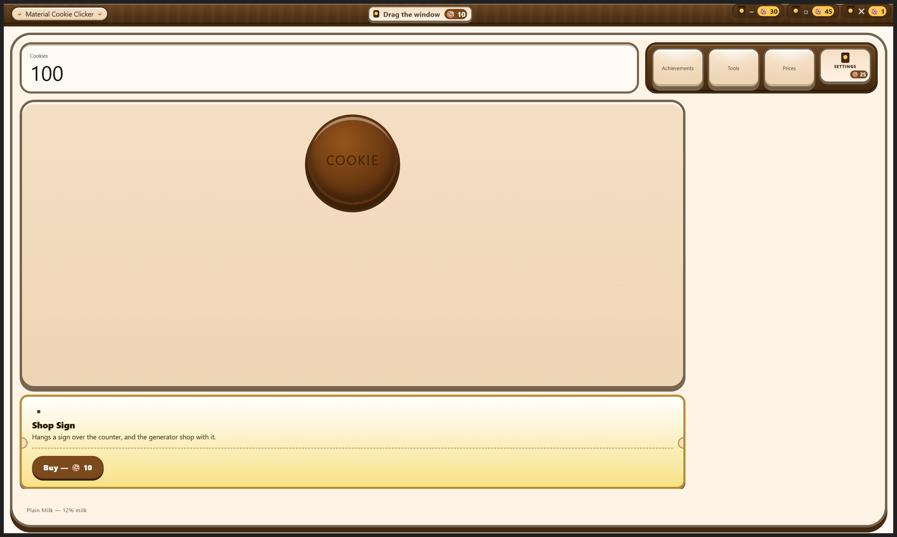

The control economy
Every setting, every button, dragging the window, minimizing it, maximizing it and resizing it: each one is bought with cookies at a printed price. Forty-one rungs across twenty-two controls — the Settings panel is one of them, and since the owner’s latest decree, so is what the application looks like.
Shipped the registry, the reducer purchase, the save subtree and every gated surface are in the build, and the locked title bar and the first purchase were photographed from the running application. One deliberate compromise is documented below: an already-played save is granted the whole table for free.
What it does
Everything else in this game is bought. Generators are bought, upgrades are bought, tools are bought, the diesel factory is bought a machine at a time. The control economy extends exactly that rule to the application’s own controls, because the owner asked for it in those words: “every setting must be bought to unlock too”, “and every button must be bought”, “even dragging the window or minimize and maximize each have to be bought”, “resizing the app needs to be purchased”, and “every feature with upgrades”.
So a control is a shelf item. It has an identifier, a flat cookie price, and — where a second rung is a real convenience rather than an invented one — a ladder above it. Nothing here unlocks itself, nothing is granted for reaching a milestone, and there is no condition to satisfy. You press the control, you see the price, you pay it.
From the running application


![The Prices panel open as an anchored dialog over a dimmed game surface. A section headed CONTROLS CATALOGUE carries a badge reading 8 OF 41 BOUGHT and a paragraph saying every control in the application is bought one press at a time, that prices are flat and printed, and that nothing is gated behind progress. A bordered callout states that two things are never for sale, the close button and this catalogue with its own search field, and that everything else has a price including the Settings panel. A free search field follows, captioned that it is free, then a group headed THE WINDOW ITSELF listing Close the window with a rung called The exit at 1 cookie, Drag the window at 10, and the start of a Minimize entry.](../assets/captures/dialog-prices.png)
The price table
Prices are flat — a control is bought once, so there is no second unit for a cost curve to price — and they fall into three bands. Window chrome is the cheapest thing in the whole game, because the first minute of a fresh save is spent clicking a cookie in a window that will not move, and that minute has to end quickly. Settings entries and the first rung of a search field sit just above it. Everything that genuinely multiplies how fast the rest of the game goes costs real cookies. Above all three sits the shared advanced regex builder, which is bought once for the whole application rather than once per surface — the reasoning isbelow, and its two rungs are the most expensive things in the table.
| Group | Control | Rung | Price |
|---|---|---|---|
| The window | Drag the window | unlock — the marquee plate becomes a drag handle | 10 |
| upgrade — the whole bar drags, no aiming required | 240 | ||
| Minimize | unlock | 30 | |
| Maximize and restore | unlock | 45 | |
| upgrade — double-click the bar to toggle | 320 | ||
| Resize the window | unlock — the edges become live | 75 | |
| Settings entries | Open Settings | unlock — the console emblem itself | 25 |
| Language mode switch | unlock — the switch appears on the panel | 60 | |
| Cantonese mode | unlock — English is free and is the default | 40 | |
| Bilingual mode | unlock — bought separately from Cantonese | 90 | |
| English funny slider | unlock | 35 | |
| Cantonese funny slider | unlock | 35 | |
| Search fields | Generators, upgrades, achievements and tools — four separate purchases, one per surface, at identical prices | unlock — the field, plain-text matching | 50 |
| upgrade — the regex builder gear and its popover | 400 | ||
| upgrade — the flag toggles and the basic token palette | 1,500 | ||
| The advanced regex builder (one shared ladder, not one per surface) | Bought once; appears inside every search popover in the application | unlock — groups and lookarounds | 4,000 |
| upgrade — the live lab | 12,000 | ||
| Buy quantity | The stepper on every shop row. ×1 is free and always was | unlock — ×10 | 120 |
| upgrade — ×100 | 900 | ||
| upgrade — Max | 6,000 | ||
| Bulk actions | Bulk select and bulk buy | unlock — a checkbox on every shop row | 200 |
| upgrade — the bulk toolbar | 1,200 | ||
| Feature switches | Tool progression switch | unlock | 300 |
| Auto-ship switch | unlock | 2,500 | |
| The look of the thing (one ladder; a fresh save owns none of it) | The whole application, all at once | unlock — colour, replacing the white-grey-and-black plain set | 50 |
| upgrade — the cabinet: wood frame, bevels, chunky borders, rounded corners | 250 | ||
| upgrade — display typography on the marquee, the panel titles and the HUD | 750 | ||
| upgrade — the oven glow, the drifting embers and the crumbs | 1,800 | ||
| upgrade — the illustrated art, including the drawn hero cookie | 4,000 | ||
| upgrade — motion: press travel and animation | 8,000 | ||
| upgrade — the dark theme | 15,000 |
The auto-ship switch is the one deliberate outlier at 2,500. It belongs to a refinery that costs millions of cookies to build, so pricing it like a drag handle would be pricing it like nothing.
The app starts plain, and the look is earned
The owner’s decree, in their own words: “the app should start with a purely super plain cheaply made app with just a cookie”. So the entire arcade-bakery appearance this project spent its design phase building — the warm palette, the wooden cabinet, the display type on the marquee, the oven glow, the illustrated icon set, the press travel under every button, the dark theme — is now the top of a seven-rung ladder rather than the thing you see first.
A brand-new save is one flat grey circle with the word COOKIE printed on it. No title bar graphics, counter, cabinet, console, discovery card, shop rail, background decoration or room drawing is visible. The cookie remains a full keyboard- and pointer-operable control, and its accessible description names the next graphics purchase. Reaching that price makes one purchase plate appear beside it; earning the cookies never buys the tier automatically.
Fifty cookies buys colour. Two hundred and fifty buys the cabinet. Seven hundred and fifty buys the lettering. The whole transformation is about twenty-nine thousand cookies, or roughly the first hour, and each rung visibly changes the room you are sitting in.
It is implemented by re-mapping design tokens, not by writing a second stylesheet. The finished look stays the single source of truth: about sixty CSS custom properties are re-declared for the plain state and every one of ten thousand lines of component styling repaints itself, because those rules already read their colours, radii, border widths and elevations through variables. Roughly a dozen structural overrides handle the places that paint a literal value a variable cannot reach — the wood-grain gradient, a few inset bevels, the decorative ember and crumb layers. The surfaces that were not audited are named as known gaps in the stylesheet rather than left to look however they happen to look.
Four things are never sold, at any tier. The cookie’s accessible name stays present. Its focus ring stays visible. Its hit area remains full size. Reduced motion is honoured in both directions: motion unbought is still, and motion bought plus a system reduced-motion preference is also still. The next graphics purchase plate uses the ordinary accessible coin-slot control and appears only when its exact price is affordable.
Every save that already exists is handed the whole ladder on the same thousand-lifetime-cookie evidence the other grants use. Those players have been looking at the finished cabinet since the day their save was written; waking them up as a white page would not read as the joke landing, it would read as the artwork having been deleted.
The regex builder: four ladders, then one
Search is sold per surface. The shop rail’s search field, the upgrade shelf’s, the Achievements panel’s and the Tools panel’s are four separate purchases at identical prices, because a search field is furniture: two fields in two rooms are two things, and buying one plainly should not furnish the other. Each of those ladders is three rungs — the field itself at 50, the gear and the popover behind it at 400, the flag toggles and the basic token palette at 1,500.
The owner then asked for the builder to be “more advanced and purchased, upgradable”, and that argument stopped holding at the top. Capture groups, lookarounds and a test-string lab are not furniture in a room — they are the builder’s own capability, and the builder is one component rendered four times. Selling them per surface would have meant eight near-identical rungs, thirty-two thousand cookies to own one feature, and a popover that forgot how to do something the moment you opened it on a different panel. So the advanced tiers are one control with one price, read by every popover in the application.
The two ladders compose rather than replace. A surface still buys its own field, its own gear and its own palette before its popover can show anything at all; what the shared rungs add then appears inside that popover, on that surface, and inside every other one at the same time.
- Groups and lookarounds, 4,000. A named-capture builder (type a name, the builder writes the syntax), an alternation builder that takes plain alternatives and escapes every one of them so a dot means a dot, and the four lookaround composers — followed by, not followed by, preceded by, not preceded by. Every one of them carries a plain-language line in both languages, because the whole case for selling a lookbehind button is that the button explains what the syntax refuses to.
- The live lab, 12,000. A test-text box inside the popover. Type a sample and the matches highlight as you type, a capture table lists every group by number and by name with the text each one took, and one sentence underneath says what the pattern does in words — “matches the very start, then the text ‘cat’, then any digit.”
All of it is evaluated locally and stays bounded: a pattern is capped at 256 characters, a sample at 2,000, the match list at 50, and a zero-width match advances the cursor rather than looping forever. The popover also remembers the last ten patterns it saw as one-press chips — in memory only, never written to the save and never transmitted, because a search history that survived a reload would be a record of what somebody went looking for.
Unbought tiers behave like every other control: a coin-slot plate sits inside the popover exactly where the capability would be, with the price stamped on it, and pressing it is how you buy it.
Two things that are never for sale
The joke has floors, and each one is held in place by a test that fails if the thing ever appears in the price table.
- Close. The window’s close button always works, in the renderer and in the main process alike. Nobody should ever have to earn the right to quit an application, and a build that could trap somebody inside itself is not a joke, it is a defect.
- The controls catalogue and its own search box. The catalogue lists every control, every rung, every price and one line saying what buying it does. Charging for the ability to find out what things cost would be a circular lock, so that one search field is free and says so on the surface.
The floor that moved: the Settings panel
There used to be a third floor. The Settings panel was free, on the argument that the settings inside it are the gag while the room they live in is where the price list is kept — lock that door and the whole economy becomes undiscoverable. The owner looked at the console, said of the Settings emblem “settings still appearing” and “needs to be purchased”, and that boundary was theirs to move. It moved: opening Settings costs 25 cookies.
The old argument was answered rather than waved away. The controls catalogue is now its own console button, free, standing beside the Settings slot and appended to the console unconditionally. The whole price list — including the 25 cookies that Settings itself costs — is one press away on a save that has never earned a cookie. It is still rendered at the bottom of the Settings panel too, for a player who has already bought in. One page, two doors, and the one that is always open never costs anything.
The other thing that keeps the spirit intact is the difference between a price and a gate. Nothing here is progress-gated. There is no milestone, no tool and no unlock in front of the Settings emblem: a save one minute old can buy it the moment it has clicked twenty-five cookies, which is the point of the price being the second-cheapest thing in the table. It is a till, not a grind.
The same decree reached the languages: English is now the default mode and is free forever, so a brand-new save is readable end to end without spending anything, while Cantonese (40) and bilingual (90) are separate purchases shown as price plates inside the language switch. The app never renders in a mode that has not been paid for — but it never rewrites the stored preference either, so a choice made once stays written down.
“Open it now” on a tool card follows the same honesty rule. The tech tree still gates no application feature and never will. But its destination now has a price on the door, so while Settings is unbought the button surfaces the purchase — announcing the control and the figure, and moving the keyboard to the coin slot that sells it — instead of quietly failing to open a panel nobody has bought. The callout says so in one extra line, with the price in it.
Ordinary unbought controls still stand where they will work, drawn as coin slots with literal prices. The graphics ladder is the deliberate exception: before the cabinet exists, its next plate appears beside the cookie only when affordable, while the cookie’s accessible description states the next price beforehand. This keeps the opening composition literally cookie-only without turning the purchase path into a guessing exercise.
The coin-slot plate is a real button, never a disabled one. A disabled button drops out of the tab order, and a player who cannot yet afford a control still deserves to land on it and hear what it costs. Pressing one you cannot afford opens the same confirmation, which prints the exact shortfall in figures instead of doing nothing.
How the window chrome is really enforced
Dragging and resizing are not gated by hiding anything, because hiding would not work. On a frameless window the drag behaviour and the resize grips belong to the operating system.
Dragging is enforced by the drag region itself: until it is bought, the title bar is marked no-drag, so Windows never treats a press there as the start of a window move. Resizing is enforced further out still — the window is created not resizable by the main process, and the renderer can only ask, over the same narrow preload bridge the rest of the application uses, for that flag to change once the unlock is genuinely in the save. A renderer that never asks can never make the edges live.
The migration compromise, stated plainly
Applied literally, “everything is bought” would mean a returning player with a built-out factory opening this build to find they can no longer move their own window, no longer reach the ×100 stepper they had been buying generator tiers with, and no longer search a hundred and eighty upgrades. That does not read as the joke landing. It reads as the update having broken a save, and the player would be right.
The same compromise answered the advanced builder, and it answered it only half way. A save that had bought a surface’s token palette owned what was then the whole builder, and this release moved the top of that ladder without refunding anything — so a save past the same one-thousand-cookie threshold is handed the 4,000-cookie groups tier outright. It is not handed the live lab. The lab is a workbench no earlier build ever shipped, nobody lost it, and granting a brand-new twelve-thousand-cookie feature to every played save would not be grandfathering, it would be a giveaway. Everybody buys the lab.
So the migration grants, and the grant is bounded by evidence rather than generosity: a save with more than one thousand lifetime cookies keeps every control it was already using, for free. That threshold is a few minutes of play, comfortably past the point where the chrome prices above would have been pocket change anyway. A fresh save, and any save that never got past a thousand lifetime cookies, buys the lot.
The honest cost: a grandfathered player never meets the coin-slot plates at all until they start a new save. If the owner would rather have the joke than the compatibility, one constant in the domain flips it, and the migration, the granted set and the tests all key off that same constant.
What is granted is a frozen list of the rungs that exist at this save version, not the live registry. A control invented after the migration was written was never usable by an older save, so it must never appear in an older save’s grant. The newest save version is a case in point: it exists only because the Settings emblem and the two extra language modes stopped being free, and it grants exactly those three things to a save above the same threshold — not a fourth, and never English, because English is not for sale.
Where it lives in the code
One registry module holds every control, every rung, every price and both languages of every label; the catalogue, the coin-slot plates, the reducer’s purchase arithmetic and the integrity tests all read that one table and nothing else. Buying goes through the same single reducer seam every other purchase in the game uses, refuses silently in the same shape — unknown rung, already owned, ladder order wrong, cookies short — and takes Market Day’s rebate exactly like a generator does. A ladder can only be climbed in order: a hand-built dispatch cannot skip to Max without paying for ×10 and ×100 on the way.